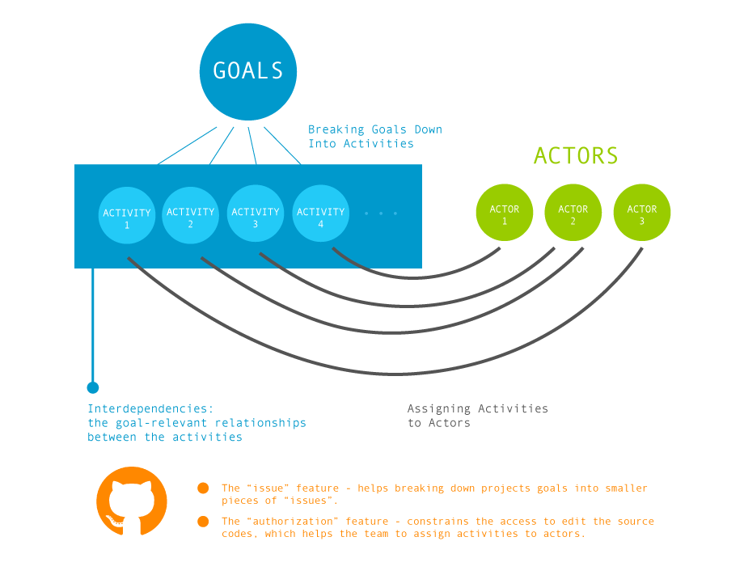
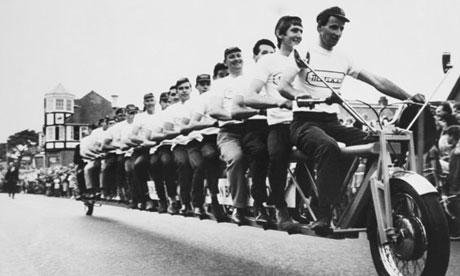
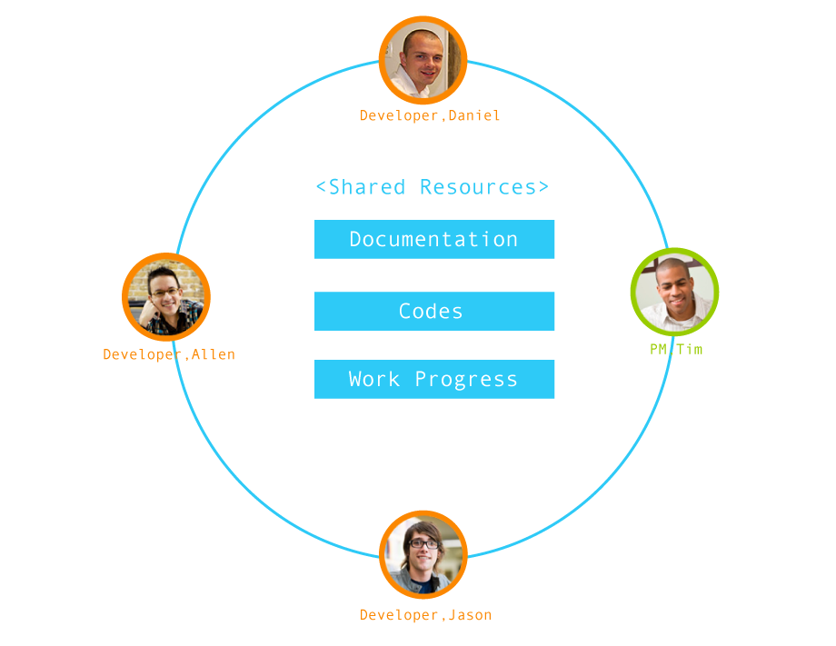

Coordination Theory is an interdisciplinary study of coordination on ways people works together. Derived from the similar collaboration problems that different fields have been dealing separately, the Coordination Theory shows the relationships between different views of coordination.
From the lens of Coordination Theory we can have a better understanding of how programmers collaborate on projects on GitHub. There are three important of section within the framework of Coordination Theory:
It decomposes the coordination process by breaking associated components into goals, activities, actors and interdependencies.

By interdependencies it means the goal-relevant relationships between the activities, as activities are dependent on each other’s success in a collaborative environment. There are three main kinds of interdependencies – prerequisite, simultaneity and shared resource.
The prerequisite describes the situation that the output of one activity is required by the next activity.
The simultaneity occurs when multiple activities should be synchronized, occurring at the same time.
The shared resource is the situation that resources are required by multiple activities.

In GitHub, the source codes are shared on the repository as the shared resource that all the actors (programmers, project manager) can access. Only those who are authorized are permitted to edit it.
The Coordination theory posits a hierarchy of the coordination process. At the beginning (bottom of the hierarchy), actors have to develop the perception of common objects, for example, the shared sources; then, they can communicate with each other to make group decision to manage interdependencies.
In this scenario, we can list out all the components of coordination:
Divide the workload into issues and assign tasks.
Three programmers work on three issues separately
All of them push their codes onto GitHub during the process
Merge three branches of issues
Remove conflicts in codes
Prerequisite
Tim should break down the workload and assign the tasks to each programmer before they get started.
Tim could not monitor the progress until Allen, Daniel and Jason pushed their parts onto GitHub.
Allen waited for Jason to finish his issues so that he could merge the two branches. Daniel kept waiting until Allen combined Jason and his issues.
Allen had to remove the conflicts in Jason’s and his codes before handing the merged branches to Daniel.
Shared Resources
The three programmers shared the documentation in which the project goals and development guidance are claimed.
The team shared all the codes (throughout the implementing process).
The three programmers shared their own process (by pushing what they have finished onto GitHub) so that the others knew how was going on the other side, to adjusting his pace (to speed up to catch up with the progress or to slow down).
Simultaneity
Allen, Jason and Daniel worked on their own issues simultaneously, and their process were shared (though not real-time, right after they finished their parts).